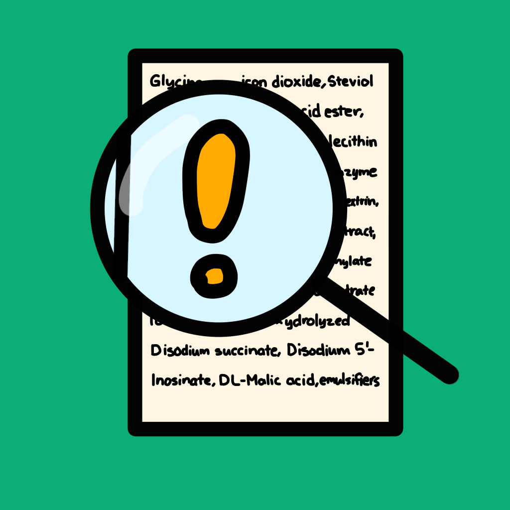
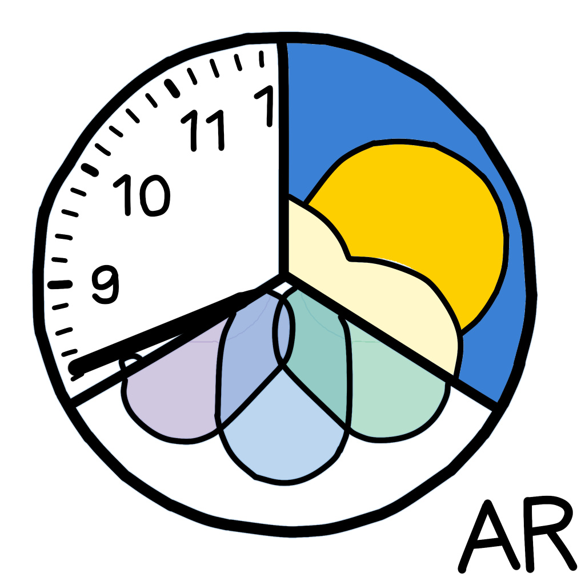
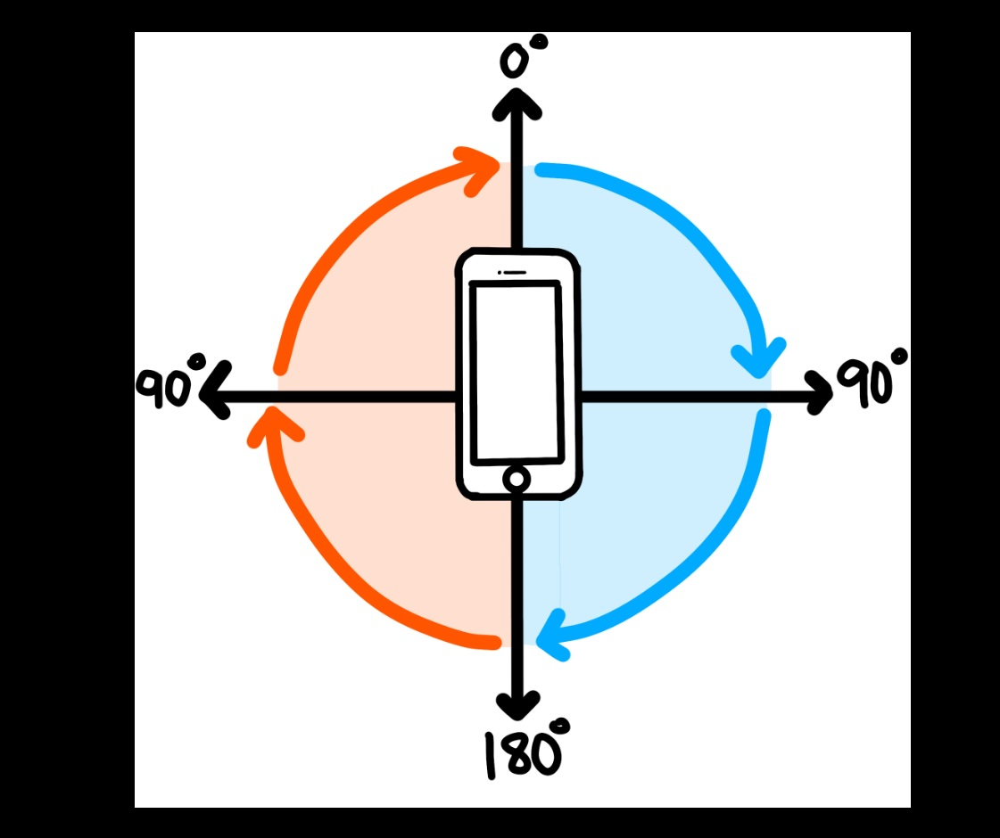

Projects
all tags
python
swift
javascript
rust
react-native
radio
theatre
ml
mods
networking
data-viz
game-dev
security
Current Projects
Best Hardware Hack - SomeHackathon 2024
📡
Ham Radio Logger
A simple logging application for amateur radio contacts with QRZ.com integration
🎭
Light Cue Manager
Theatre lighting control software for small productions
🐦
Bird Identification App
Mobile app for identifying local bird species by sight and sound
Completed Projects
Congressional App Challenge Winner (2022, District CA-14)
Swift Student Challenge Winner (2022)



Utrition
App that scans food labels and makes them simpler. Also customizes % daily values!

Default Apps with AR Glasses
Imagined how default apps can be augmented in AR
TextToMorseCode
Simple python program to convert text into CW with configurable speed, sidetone, and Farnsworth timing
Gift Tastes Make (More) Sense
Stardew Valley mod that adjusts some villager gift preferences to better match in-game context

Clinometer
Simple inclinometer created for school use